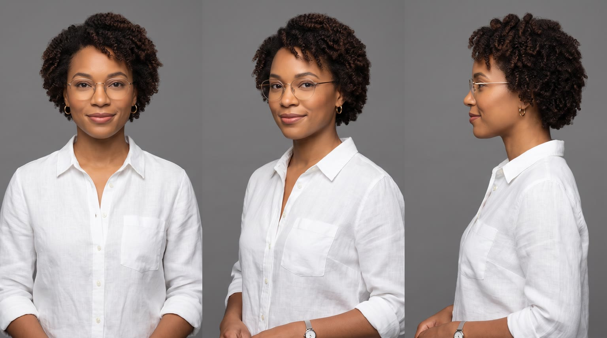
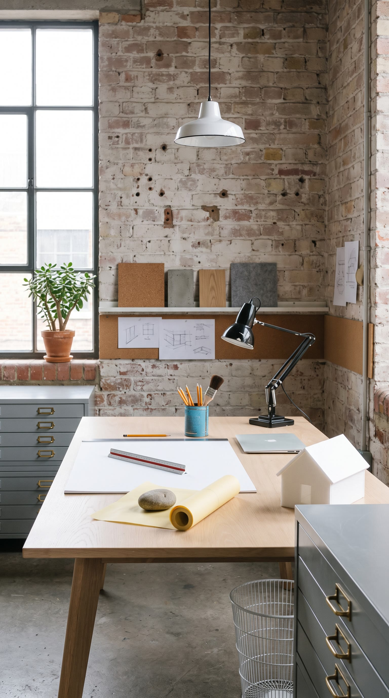
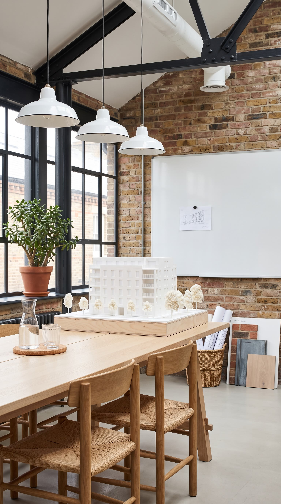
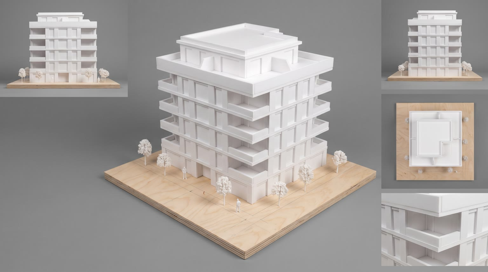
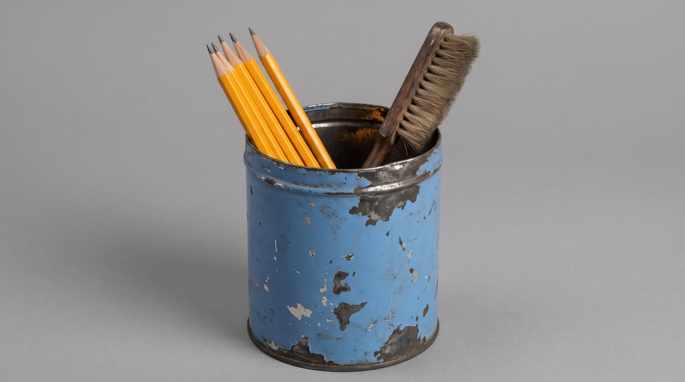

All templates · template.json · original storyboard
Us vs themus_vs_them-01-same-mondaySame Monday
Same architect, same Monday, stacked in split screen: on top she makes do with a plain generic version, below she has {{product.name}}. By 3pm only one of them is still winning, and the other one knows it.
Fit by product type
| ingested | great | a messy generic version at the desk against the product is the clearest split |
| applied | good | greasy fingerprints on the drawings make the rival's cost visible; the product is applied at the desk |
| worn | good | shoes, glasses, jackets and watches that pinch or slip against ones she forgets she is wearing |
| handheld | great | a leaking or dying generic gadget against one that just works, beside the pencil tin |
| carried | good | a split zip and spilled drawings against a neat bag on the chair back |
| home | stretch | desk lamps, chairs, cushions and speakers work in the studio; the bin payoff becomes a push aside and large furniture barely fits the split panes |
| consumable | good | a torn, scattering generic pack against a tidy one |
Refuses: products for children; alcohol; products whose benefits are only health or medical claims (the rival's costs must stay everyday annoyances); categories where a plain generic version would look like a specific real competitor (one dominant brand shape)
Cast, world and props (shipped with the template)





- Brooks Studio is Nia's four-person architecture practice, three years old, on the second floor of a 1920s printing warehouse in Chicago. The floor still has bolt holes where the presses stood.
- Today, Monday, at 3pm, she pitches a six-storey apartment building to the Ferrante family. The white foam model on the meeting table took the team eleven nights.
- The little foam house on her desk is the first model she ever built, in her second year of college; its roof has been glued back on twice.
- Her pencil cup is her grandfather's old blue coffee tin; it always holds six sharpened pencils and a soft drafting brush.
- Both halves are the same room, the same objects, the same woman on the same Monday. Only one thing changes, the product she relies on, and with it the light, the mess and the stains.
Script: what each line must do
Right column is the worked example for Red Bull Sugarfree.
| Time | Speaker | Intent (template) | Example |
|---|---|---|---|
| 0.4-2.3 | nia | Hook: state the controlled experiment, same person, one difference, naming the category in the plural. Pattern: 'Same Monday. Two <plural category noun>.' The noun is the plain category (bottles, creams, jackets, lamps, bags, packs), never a brand. Max 5 words. Delivery: bottom-pane Nia, straight to lens, dry, a tiny smile | Same Monday. Two cans. |
| 3.0-5.0 | nia | Old way, cost one: a muttered question about the small everyday annoyance the rival is causing right now. the annoyance comes from world_bible.rival.by_archetype[product.archetype].flaw; no health, safety or medical claim; never names a brand. e.g. 'Why is everything sticky?', 'Why is everything greasy?', 'Why won't this stay up?' Max 6 words. Delivery: top-pane Nia, muttering, dealing with the rival's mess | Why is everything sticky? |
| 6.0-8.2 | nia | Product way, win one: the matching moment, one short benefit that answers L2. starts with 'Mine'; benefit only from product.benefits, reworded no further than person and tense Max 6 words. Delivery: bottom-pane Nia, a quick glance up at the lens mid-sketch, then straight back to work | Mine helps me focus. |
| 9.3-11.2 | nia | Old way, cost two: the afternoon version of the rival's letdown, said through frustration at the meeting table. no health, safety or medical claim; ordinary annoyance only. e.g. 'Is it three already?', 'Not again.', 'Where did it all go?' Max 6 words. Delivery: top-pane Nia, weary, chin on her hand | Is it three already? |
| 12.2-15.6 | nia | Fixed: And that's the whole building. Questions? Max 8 words. Delivery: bottom-pane Nia, standing, crisp and confident, to colleagues off camera | And that's the whole building. Questions? |
| 16.6-20.4 | nia | Product line: say {{product.name}} (or its short spoken form) and the ONE difference from the rival that made the whole day. benefit comes only from product.benefits, reworded no further than person and tense; never mentions the rival by any name; brand spelled phonetically in the video prompt using product.phonetic Max 10 words. Delivery: to lens, warm, unhurried, product at chest height | Red Bull Sugarfree. Same benefits, without the sugar. |
| 22.0-23.4 | nia | Fixed: Okay. Fine. Max 3 words. Delivery: top-world Nia, flat, looking straight at the lens, getting rid of the rival | Okay. Fine. |
| 27.0-29.4 | nia (off camera) | Tagline: product.tagline if the page has one, otherwise a 3 to 5 word line built from the L6 benefit. Max 6 words. Delivery: warm voiceover, smiling | Wiiings without sugar. |
Product-adjacent props by type
| ingested | the product standing on the desk corner in the product pane; in the old-way pane the same spot holds the pink rival and a sticky ring |
| applied | the product on the deep window sill beside the jade plant in the product pane; the pink rival tube in the same spot in the old-way pane |
| worn | nothing on the desk: she wears the product in the product pane and the pink rival in the old-way pane |
| handheld | the product beside the blue coffee tin pencil cup in the product pane; the pink rival there in the old-way pane |
| carried | the product hanging from the back of her chair in the product pane; the pink rival bag slumped on the floor in the old-way pane |
| home | the product beside or behind the desk as part of the studio (lamp, chair, cushion, speaker) in the product pane; the pink rival in the same place in the old-way pane |
| consumable | the product's pack in the top flat-file drawer in the product pane; the torn pink rival pack spilling on the desk in the old-way pane |
Shots and how the product appears for each type
S01 · 0 to 2.5 s · absent
The old way, 9am: Nia at her desk starts her day with the pink rival and it fails on her at once; she flinches.
| ingested | opening the rival from the rival prop sheet (a plain candy-pink unbranded version of the same kind of product, no label, no text, no logo), and a small spurt of sticky pink foam or a shower of crumbs hits her shirt cuff and the drafting pad |
| applied | squeezing the rival from the rival prop sheet (a plain candy-pink unbranded version of the same kind of product, no label, no text, no logo), and a greasy blob splats onto the drafting pad and her cuff |
| worn | putting on the rival from the rival prop sheet (a plain candy-pink unbranded version of the same kind of product, no label, no text, no logo) and wincing as it pinches or slips |
| handheld | switching on or opening the rival from the rival prop sheet (a plain candy-pink unbranded version of the same kind of product, no label, no text, no logo), and it sputters, leaks or tangles in her hands |
| carried | dropping the rival from the rival prop sheet (a plain candy-pink unbranded version of the same kind of product, no label, no text, no logo) onto the desk, and its zip splits and pencils spill across the pad |
| home | switching on or sitting down on the rival from the rival prop sheet (a plain candy-pink unbranded version of the same kind of product, no label, no text, no logo) beside the desk, and it flickers, sags or wobbles |
| consumable | tearing open the rival from the rival prop sheet (a plain candy-pink unbranded version of the same kind of product, no label, no text, no logo), and its contents scatter across the drafting pad |
S02 · 0 to 2.5 s · in_use
The product way, 9am: same desk, same framing, tidy and in cool daylight; the product works cleanly and Nia looks up into the lens.
| ingested | holding {{product.visual}}, just opened cleanly, at chest height with the label facing camera |
| applied | holding {{product.visual}} at chest height with the label facing camera, a little just smoothed onto the back of her hand |
| worn | wearing {{product.visual}}, just put on, touching it once, its best side to camera |
| handheld | holding {{product.visual}} at chest height, switched on or ready, logo facing camera |
| carried | setting {{product.visual}} neatly on the desk corner, logo facing camera |
| home | switching on or settling beside {{product.visual}} at the desk, at its true size, logo toward camera |
| consumable | taking one {{product.visual}} cleanly from its pack at chest height, label facing camera |
S03 · 2.5 to 5.5 s · absent
The old way, 11am: the rival's first annoyance stalls her work, mid-mutter.
| ingested | peeling sticky fingertips off the keys of an open silver laptop, the rival from the rival prop sheet (a plain candy-pink unbranded version of the same kind of product, no label, no text, no logo) beside a tacky pink ring on the drafting pad |
| applied | wiping shiny greasy fingerprints off her drawings with a crumpled napkin, the rival from the rival prop sheet (a plain candy-pink unbranded version of the same kind of product, no label, no text, no logo) beside them |
| worn | tugging and readjusting the rival from the rival prop sheet (a plain candy-pink unbranded version of the same kind of product, no label, no text, no logo) for the tenth time instead of drawing |
| handheld | shaking the rival from the rival prop sheet (a plain candy-pink unbranded version of the same kind of product, no label, no text, no logo), which has leaked or died, over a damp patch on the drafting pad |
| carried | digging through the rival from the rival prop sheet (a plain candy-pink unbranded version of the same kind of product, no label, no text, no logo) on her lap for a pencil, its lining torn |
| home | leaning over to steady the rival from the rival prop sheet (a plain candy-pink unbranded version of the same kind of product, no label, no text, no logo) beside the desk as it flickers or wobbles |
| consumable | picking bits spilled from the rival from the rival prop sheet (a plain candy-pink unbranded version of the same kind of product, no label, no text, no logo) off her drawings one by one |
S04 · 5.5 to 8.5 s · background
The product way, 11am: clean hands sketching fast and sure on the drafting pad with the product right there; she flicks a glance at the lens.
| ingested | {{product.visual}} stands upright on the desk corner, label facing camera |
| applied | {{product.visual}} stands upright on the desk corner, label facing camera |
| worn | she is wearing {{product.visual}}, comfortable and forgotten, its best side visible |
| handheld | {{product.visual}} rests beside the blue coffee tin pencil cup, working, logo facing camera |
| carried | {{product.visual}} hangs neatly from the back of her chair at the frame edge, logo visible |
| home | {{product.visual}} stands beside the desk at its true size, doing its job, logo toward camera |
| consumable | the pack of {{product.visual}} stands neatly on the desk corner, label facing camera |
S05 · 8.5 to 11.5 s · absent
The old way, 3pm: slumped at the meeting table, the rival letting her down one more time.
| ingested | mid-yawn with eyes half closed, the rival from the rival prop sheet (a plain candy-pink unbranded version of the same kind of product, no label, no text, no logo) empty in front of her beside a tacky ring |
| applied | dabbing a greasy shine off her forehead with a napkin, the rival from the rival prop sheet (a plain candy-pink unbranded version of the same kind of product, no label, no text, no logo) on the table |
| worn | with the rival from the rival prop sheet (a plain candy-pink unbranded version of the same kind of product, no label, no text, no logo) pulled off and pushed aside on the table (or kicked off under it if it is footwear), rubbing where it pinched |
| handheld | staring at the rival from the rival prop sheet (a plain candy-pink unbranded version of the same kind of product, no label, no text, no logo), dead again, lying on the table in front of her |
| carried | with the rival from the rival prop sheet (a plain candy-pink unbranded version of the same kind of product, no label, no text, no logo) spilled open on the table, drawings sliding out of it |
| home | shifting on or squinting under the rival from the rival prop sheet (a plain candy-pink unbranded version of the same kind of product, no label, no text, no logo) at the table end as it sags or flickers |
| consumable | shaking the rival from the rival prop sheet (a plain candy-pink unbranded version of the same kind of product, no label, no text, no logo), already empty, over the table |
S06 · 11.5 to 16 s · background
The product way, 3pm: standing at the head of the table, crisp and bright, presenting the foam model to two colleagues seen from behind, the product with her.
| ingested | {{product.visual}} stands upright on the table beside the model, label facing camera |
| applied | {{product.visual}} stands upright on the table beside the model, label facing camera |
| worn | she wears {{product.visual}}, comfortable and sharp, its best side toward camera |
| handheld | {{product.visual}} rests on the table beside the model, logo facing camera |
| carried | {{product.visual}} sits neatly on the table beside the model, rolled drawings tucked in it, logo facing camera |
| home | {{product.visual}} stands at the table end at its true size, part of the room, logo toward camera |
| consumable | the pack of {{product.visual}} stands upright on the table beside the model, label facing camera |
S07 · 16 to 21 s · hero
The divider slides up and the product side takes the whole screen: Nia by the tall studio window shows the product at chest height and says the product line to the lens.
| ingested | holding {{product.visual}} at chest height with the label facing camera |
| applied | holding {{product.visual}} at chest height with the label facing camera |
| worn | wearing {{product.visual}}, one hand touching it, its best side and logo to camera (if it is footwear, holding it at chest height) |
| handheld | holding {{product.visual}} at chest height with the logo facing camera |
| carried | holding {{product.visual}} by its strap or handle at chest height, logo to camera |
| home | standing beside {{product.visual}} by the window with one hand resting on it, at its true size, logo to camera |
| consumable | holding the pack of {{product.visual}} at chest height with the label facing camera |
S08 · 21 to 24 s · absent
Cut back to the old-way world full frame: rumpled Nia at her cluttered desk stares flatly into the lens as if at her other self, concedes, and gets rid of the rival.
| ingested | holding the rival from the rival prop sheet (a plain candy-pink unbranded version of the same kind of product, no label, no text, no logo) out over a small wire waste bin beside the desk, about to drop it in |
| applied | holding the rival from the rival prop sheet (a plain candy-pink unbranded version of the same kind of product, no label, no text, no logo) out over a small wire waste bin beside the desk, about to drop it in |
| worn | holding the rival from the rival prop sheet (a plain candy-pink unbranded version of the same kind of product, no label, no text, no logo), just taken off, out over a small wire waste bin beside the desk, about to drop it in |
| handheld | holding the rival from the rival prop sheet (a plain candy-pink unbranded version of the same kind of product, no label, no text, no logo) out over a small wire waste bin beside the desk, about to drop it in |
| carried | holding the rival from the rival prop sheet (a plain candy-pink unbranded version of the same kind of product, no label, no text, no logo) by one strap out over a small wire waste bin beside the desk, about to drop it in |
| home | unplugging the rival from the rival prop sheet (a plain candy-pink unbranded version of the same kind of product, no label, no text, no logo) or pushing it out of frame with one hand, not looking at it |
| consumable | holding the rival from the rival prop sheet (a plain candy-pink unbranded version of the same kind of product, no label, no text, no logo), torn and half empty, out over a small wire waste bin beside the desk, about to drop it in |
S09 · 24 to 30 s · hero
Golden hour on the tidy desk: the product beside the finished foam model; tagline and pack shot.
| ingested | {{product.visual}} stands upright on a pale oak desk, filling about 40% of the frame height, label facing camera, fine cold droplets |
| applied | {{product.visual}} stands upright on a pale oak desk, filling about 40% of the frame height, label facing camera |
| worn | {{product.visual}} laid neatly on a pale oak desk, its best side and logo to camera |
| handheld | {{product.visual}} resting on a pale oak desk, logo facing camera |
| carried | {{product.visual}} standing on a pale oak desk, logo facing camera |
| home | {{product.visual}} beside the pale oak desk at its true size, the camera pulled back just enough to hold it whole, logo to camera |
| consumable | the pack of {{product.visual}} standing upright on a pale oak desk, label facing camera |
Generation units (templated prompts)
U1 · 12 s
9:16 commercial comparison footage, warm yellowish tungsten light, cluttered and a bit messy, locked-off 35mm eye-level shots, faces and hands kept around the vertical centre of the frame. @Image1 (Nia, white linen shirt, gold-rim glasses) in the studio from @Image2 and @Image3. Only the plain candy-pink rival from @Image4 appears, with no label, no text and no logo. Shot 1 (0 to 2.5 s): at her cluttered desk, {{action.S01}}; she flinches. Shot 2 (2.5 to 5.5 s): medium close-up, {{action.S03}}, and mutters: "{{line.L2}}" Shot 3 (5.5 to 8.5 s): at the meeting table, chin on her hand, {{action.S05}}: "{{line.L4}}" Shot 4 (8.5 to 12 s): back at the desk she stares flatly into the lens, says: "{{line.L7}}" while {{action.S08}}. Native sound: the rival's small failures, a sigh, the clank in the bin. No music. No text, no clocks, no split screen.U2 · 10 s
9:16 commercial comparison footage, cool clean daylight, tidy and ordered, locked-off 35mm eye-level shots matched to the other world, faces and hands kept around the vertical centre of the frame. @Image2 (Nia, white linen shirt, gold-rim glasses) in the studio from @Image3 and @Image4, with the product exactly as @Image1. Shot 1 (0 to 2.5 s): at her tidy desk, {{action.S02}}, and says dryly to the lens: "{{line.L1}}" Shot 2 (2.5 to 5.5 s): medium close-up, sketching fast and sure on a drafting pad, {{action.S04}}, she glances up: "{{line.L3}}" Shot 3 (5.5 to 10 s): standing at the head of the meeting table presenting a white foam building model to two colleagues seen from behind, {{action.S06}}, crisp: "{{line.L5}}" Keep the product's shape, colours and label exactly as @Image1. Native sound: the product's clean sound, pencil, confident voice. No music. No text, no clocks, no split screen.U3 · 5 s · exact-risk
9:16 commercial, cool clean daylight by a tall studio window. Medium close-up of @Image2 (Nia), {{action.S07}}; the product matches @Image1 exactly, label readable; very slight push-in, she says warmly to the lens: "{{line.L6}}" (say the brand as {{product.phonetic}}). The product stays still for the whole line. Keep the product's shape, colours and label exactly as @Image1. Native sound: room tone, her voice. No music, no text.U4 · 6 s · exact-risk
9:16 premium pack shot at golden hour. Slow push-in onto {{action.S09}}, beside a finished white foam architectural model, warm low sun from a window rim-lighting it; the product matches @Image1 exactly and does not move or change. Keep the brick wall above the product empty. Native sound: quiet evening studio room tone. No music, no text.